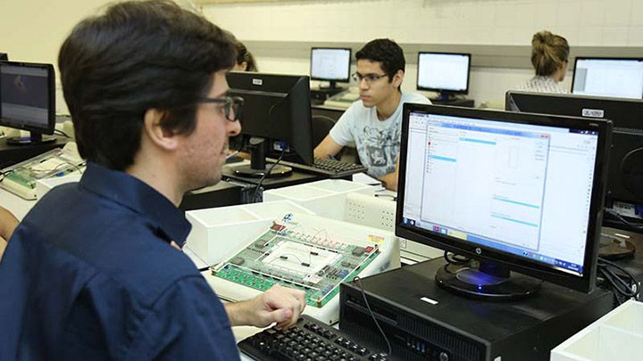

A informática e a internet auxiliam e integram, a partir de suas amplas funções, um processo de construção, estabelecendo um ritmo virtual ao aprimoramento de conceitos, à realização de questionamentos e à mediação dialética.
- Paulo Ricardo Zargolin
Técnico em Informática para Internet

O TÉCNICO EM INFORMÁTICA PARA INTERNET é o profissional que desenvolve e realiza manutenções em websites, portais na Internet e Intranet. Utiliza ferramentas de desenvolvimento de projetos para construir soluções que auxiliam o processo de criação de interfaces e aplicativos empregados no comércio e marketing eletrônicos.
veja maisAtuação

Cria websites de acordo com as necessidades do cliente, identificando e sugerindo as melhores soluções; faz a manutenção de portais, sites e intranets; cuida da identidade visual das páginas de uma empresa; faz a customização de plataformas de conteúdo para web, como blogs e sites de comércio eletrônico; cria e realiza manutenção de bancos de dados para websites; adapta as páginas para abrigar vídeos, áudios e funções que facilitem a acessibilidade, como comandos de voz, por exemplo; trata e otimiza imagens para uso na internet; e prepara o layout de mensagens que são enviadas por e-mail (newsletter ou e-mail marketing), entre outras atividades.
veja maisMercado de Trabalho
Empresas de desenvolvimento de sites ou de sistemas e empresas de marketing digital. O técnico também pode trabalhar por conta própria, como freelancer, prestando serviço a outras empresas.
veja maisContato
email: email@hi.com
telefone: (16)9999999